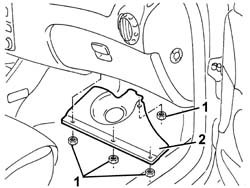
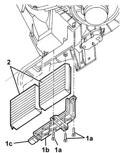
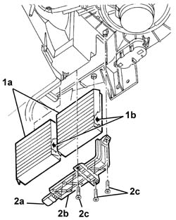

5010B09 PURIFYING FILTER (ANTIPOLLEN) FILTER ELEMENT - REPLACE
- Path
- Procedures > 50 AUXILIARY UNITS > 5010 HEATING/VENTILATION - MISCELLANEOUS > 5010B HEATING/VENTILATION AIR PIPES AND DUCTS > 5010B09 PURIFYING FILTER (ANTIPOLLEN) FILTER ELEMENT - REPLACE
- Kind
- repair procedure (removal / refitting; the operation number is the code)
- Applies to
- engines: 2.0 JTS, 3.2 V6, 1.9 JTD 16V; all production periods
- Interactive page
- https://sloeber94.github.io/elrnDB-aGt/en/#/125001498
Applies to: engines: 1.9 JTD 16V; all production periods
Applies to: engines: 2.0 JTS, 3.2 V6, 1.9 JTD 16V; all production periods
 Removing
Removing
 Refitting
Refitting1. Working under the right side of the dashboard, undo the nuts fixing the bulkhead.
2. Remove the bulkhead.

Applies to: engines: 2.0 JTS, 3.2 V6, 1.9 JTD 16V; all production periods
1. Undo the bolts (1a) and remove the cover (1b) for the filter elements, after having release it from the retainer (1c).
2. Remove the filter elements.

Applies to: engines: 2.0 JTS, 3.2 V6, 1.9 JTD 16V; all production periods
Refitting
RemovingCheck that the filter elements are not damaged or clogged.
1. Position the filter elements (1a).
2. Attach the retainer (2a) for the cover (2b), then tighten the bolts (2c).

Applies to: engines: 2.0 JTS, 3.2 V6, 1.9 JTD 16V; all production periods
Position the bulkhead and fix it using the nuts.
Topics that link to this page (9)
- 0010K20 20,000KM SERVICE COUPON, EMISSION CONTROL VERSION
- 0010K40 40,000KM SERVICE COUPON, EMISSION CONTROL VERSIONS
- 0010K60 60,000KM SERVICE COUPON - EMISSION CONTROL VERSIONS
- 0010K80 80,000KM SERVICE COUPON - EMISSION CONTROL VERSIONS
- 0010M01 100,000KM SERVICE COUPON, EMISSION CONTROL VERSIONS
- 0010M20 120,000KM SERVICE COUPON, EMISSION CONTROL VERSIONS
- 0010M40 140,000KM SERVICE COUPON - EMISSION CONTROL VERSIONS
- 0010M60 160,000KM SERVICE COUPON - EMISSION CONTROL VERSIONS
- 0010M80 180,000KM SERVICE COUPON - EMISSION CONTROL VERSIONS